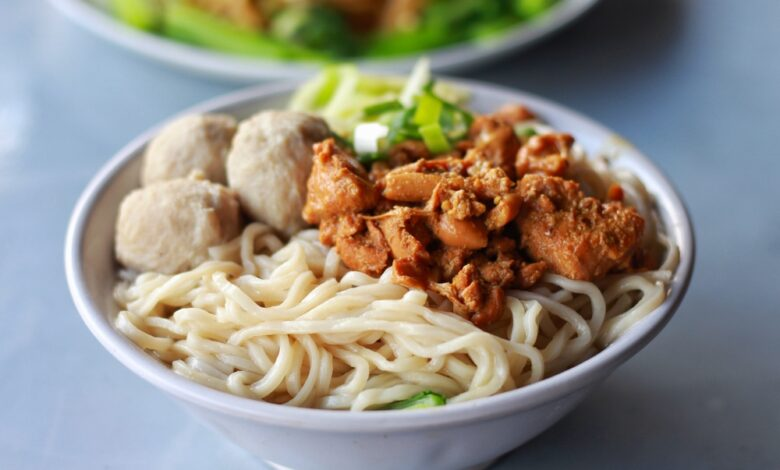

Mie Ayam

Image and Article source
Racikan dan bumbu mie ayam berbeda-beda di setiap tempat. Masing-masing
tempat atau daerah mempunyai racikannya sendiri seperti misalnya mie ayam
Solo, mie ayam Jakarta, dan mie ayam Wonogiri. Mie ayam Wonogiri mempunyai
ciri khusus yaitu topping daging ayam berkuah manis gurih yang menjadi
rahasia kelezatan dari hidangan ini. Kuahnya yang kental membuat mie ayam
ini susah untuk ditolak. Rasa manis gurih pada mie ayam ini berasal dari
bumbu kecap manis dan asin yang meresap dalam tumisan ayamnya. Mie ayam
biasanya juga disajikan bersama dengan bakso atau pangsit dan juga kaldu
ayam.
Bahan-bahan / Ingredients
- 500 gr mie telur
- 300 gr daging ayam
- 500 ml minyak ayam
- 4 siung bawang putih
- 4 siung bawang merah
- 1 sdt ketumbar
- 1 ruas jari kunyit
- 4 butir kemiri
- 1 ruas jari jahe
- 2 liter air rebusan daging ayam
- 1 sdt lada bubuk
- 1 sdt garam
- Tulang ayam secukupnya
Cara Membuat
-
Pertama, buat kuah kaldu mie ayam terlebih dahulu. Caranya dengan merebus
lagi air rebusan daging ayam ditambah dengan lada bubuk, garam, dan
tulang ayam
-
Untuk topping ayamnya, rebus ayam terlebih dahulu kemudian potong
kecil-kecil atau potong halus
-
Haluskan bumbu seperti bawang merah, bawang putih, ketumbar, kunyit,
kemiri, dan jahe
-
Panaskan minyak lalu tumis ayam dengan bumbu halus tadi sampai matang
- Tambahkan garam dan penyedap rasa secukupnya
-
Setelah kuah mie ayam dan toppingnya jadi, rebus mie telur yang sudah
disiapkan
-
Siapkan mangkuk saji lalu tambahkan 1 minyak ayam dan 1 sdt merica
-
Masukkan mie yang sudah matang ke dalam mangkuk saji lalu aduk rata
sampai mie tercampur dengan minyak ayam
- Tambahkan topping ayam dan juga kuah ayam
- Mie ayam sederhana siap disajikan
Home